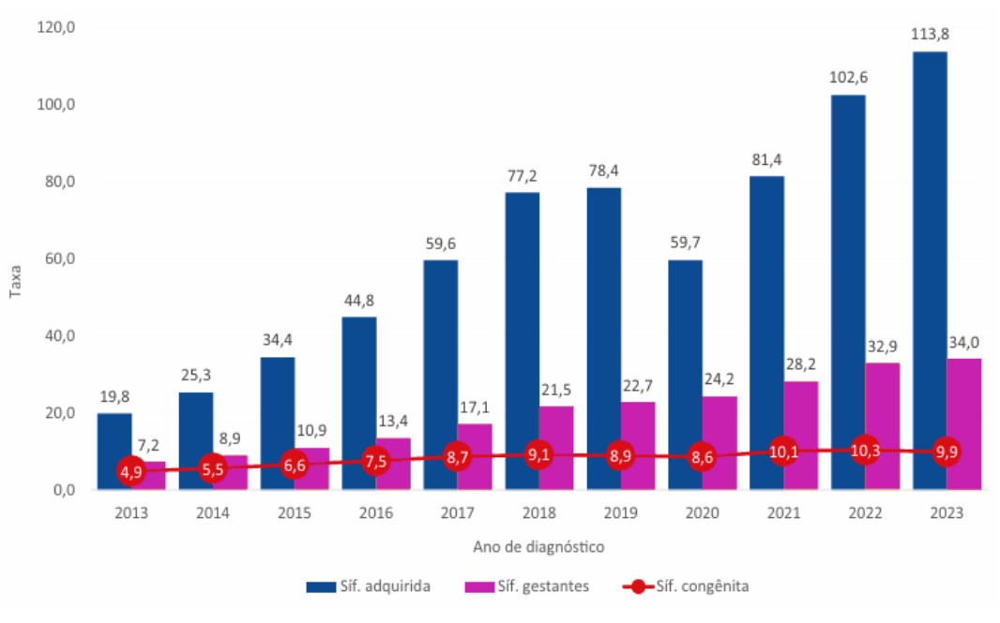
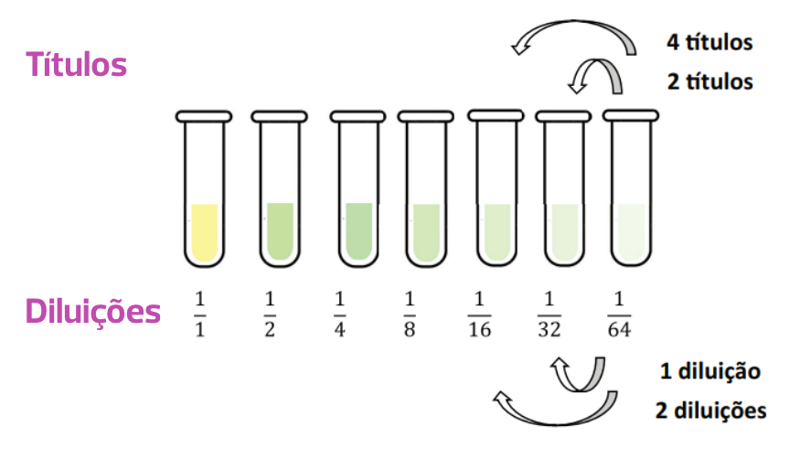

Aula 1
Sífilis na gestação
Objetivos de aprendizagem:
- Conhecer a situação epidemiológica da sífilis na gestação, no Brasil.
- Distinguir as fases clínicas da sífilis.
- Compreender o significado de “rastreio” para sífilis na gestação.
- Acompanhar o tratamento de gestantes com diagnóstico de sífilis.
- Realizar busca ativa de parcerias.
-
Acompanhar a realização de VDRL mensal após o tratamento.
O que é sífilis?
A sífilis é uma infecção bacteriana sistêmica, crônica, curável e exclusiva do ser humano. Quando não tratada, evolui para estágios de gravidade variada, podendo acometer diversos órgãos e sistemas do corpo. Sua transmissão se dá principalmente por contato sexual; contudo, pode ocorrer transmissão vertical para o feto durante a gestação de uma mulher com sífilis não tratada ou tratada de forma não adequada.

A maioria das pessoas com sífilis é assintomática; quando apresentam sinais e sintomas, muitas vezes não os percebem ou não os valorizam, e podem, sem saber, transmitir a infecção às suas parcerias sexuais. Quando não tratada, a sífilis pode evoluir para formas mais graves, comprometendo especialmente os sistemas nervoso e cardiovascular.

Atenção!
Na gestação, a sífilis pode apresentar consequências severas, como abortamento, prematuridade, natimortalidade, manifestações congênitas precoces ou tardias e/ou morte do recém-nascido (RN).
Vamos entender como essa doença se manifesta e como é seu tratamento durante a gestação. Mas antes disso, vamos entender o que é rastreamento.
> O que é rastreamento
Rastreamento de doenças, também conhecido como screening, é um processo que identifica uma doença em pessoas assintomáticas, sem qualquer manifestação da doença.
É exatamente o que ocorre no caso da sífilis na gestação. A maioria das gestantes eventualmente diagnosticadas encontra-se na fase de latência, uma fase caracterizada pela ausência de sintomas.
A solicitação do Teste Rápido para sífilis em gestantes assintomáticas é uma forma de rastreio para identificar uma doença que não é percebida pela paciente.
No rastreamento, um exame positivo não implica fechar um diagnóstico, pois geralmente são exames que selecionam as pessoas com maior probabilidade de apresentar a doença em questão. Outro teste confirmatório (com maior especificidade para a doença em questão) é necessário depois de um rastreamento positivo, para que se possa estabelecer um diagnóstico definitivo.
Por isso, um Teste Rápido para sífilis positivo não significa que a paciente tenha sífilis. Pode ter tido no passado e já tratou. Testes confirmatórios são necessários para fechar o diagnóstico.
Algumas vezes um teste de rastreio positivo não é confirmado por um teste diagnóstico. Isso chama-se falso positivo. Na sífilis, muitas vezes o tratamento é iniciado antes de fechar o diagnóstico. Isso pode não ser aceitável para algumas doenças, mas no caso da sífilis o “Sobrediagnóstico” é aceitável, tendo em vista a gravidade da doença e a segurança do tratamento.
> Sífilis no pré-natal
A sífilis é uma doença de alta prevalência entre pessoas adultas e gestantes. Perceba nas estatísticas a seguir:
Sífilis em gestantes
86.111 casos (taxa de incidência de 34,0/1.000 NV).
Sífilis congênita
25.002 casos (taxa de incidência de 9,9/1.000 NV).
Óbitos
196 casos (< 1 ano) (taxa de mortalidade de 7,7/100.000 nascidos).
O monitoramento das taxas de detecção de sífilis é essencial para avaliar a disseminação da doença e a efetividade das estratégias de prevenção e controle.
A seguir, apresentamos um gráfico com a taxa de detecção de sífilis adquirida, sífilis em gestantes e a incidência de sífilis congênita. Esses indicadores permitem analisar a evolução da infecção na população geral, a ocorrência da doença em gestantes e o impacto da transmissão vertical, auxiliando na formulação de políticas públicas de saúde.
Taxa de detecção de sífilis adquirida (por 100.000 habitantes), taxa de detecção de sífilis em gestantes e taxa de incidência de sífilis congênita (por 1.000 nascidos vivos), por ano de diagnóstico. Brasil, 2013 a 2023
Você sabe qual é a situação epidemiológica na sua cidade, e na sua unidade de saúde? Converse com o gerente da sua unidade. Busque esta informação junto à vigilância epidemiológica do seu município.
Clique aqui e saiba mais sobre o painel de sífilis em gestantes do Ministério da Saúde.
> Quais são as formas clínicas da sífilis?
A sífilis é dividida em estágios que orientam o tratamento e o monitoramento da infecção, a saber:
Sífilis recente
Primária, secundária e latente recente:
até um ano de evolução.
Sífilis tardia
Latente tardia e terciária: mais de um
ano de evolução.
Entenda as fases evolutivas da sífilis:
> Como a sífilis é identificada?
Vimos que a maioria das pessoas com sífilis é assintomática; quando apresentam sinais e sintomas, muitas vezes não os percebem ou não os valorizam, e podem, sem saber, transmitir a infecção às suas parcerias sexuais.
Durante a gestação, a maioria das mulheres se encontra na fase latente. Como nem sempre é possível determinar o momento da infecção primária, estas mulheres se encontram na fase evolutiva que pode ser classificada como “sífilis latente de duração indeterminada”.
O diagnóstico de sífilis é uma combinação de testes sorológicos não-treponêmicos (baseados em laboratório) e testes treponêmicos.
Entenda as diferenças a seguir:
> Como é o tratamento para sífilis na gestação?
O tratamento da sífilis na gestação é feito com penicilina benzatina. O número de doses depende da fase evolutiva da doença, conforme tabela. Três doses são necessárias para o tratamento da sífilis tardia. Como, na gravidez, a maioria dos casos é classificada como sífilis latente tardia ou de duração indeterminada, a maioria das mulheres necessita de três doses. O intervalo entre as doses é de 7(sete) dias (no máximo 9 dias).
Veja a tabela com os esquemas terapêuticos recomendados, conforme o estágio da infecção:
Notificação das parcerias
Notificação do parceiro é um processo que inclui informar a parceria sexual da pessoa infectada (paciente índice) sobre a sua exposição, convidar para a realização de testes, administrar tratamento presuntivo (quando indicado) e aconselhar sobre prevenção de futuras exposições.

Atenção!
Em casos de sífilis recente, a chance de ambos os parceiros estarem infectados é muito alta, mesmo que um deles apresente testes negativos. Já na sífilis latente tardia, a infecção pode ter ocorrido em uma relação anterior, e o parceiro atual pode não apresentar sinais da doença nem testes positivos.
A notificação inadequada integra um dos principais motivos associados à dificuldade de controle das IST, especialmente da sífilis. O não tratamento de parceiros de gestantes infectadas é frequentemente citado como uma das causas do descontrole da sífilis congênita no país.
> Como fazer a notificação de parcerias?
A notificação pode ser feita pela própria paciente-índice, ou profissional de saúde que fez o diagnóstico (médico ou enfermeiro).
Ocorre quando este, ao ser encorajado pelo profissional, assume a responsabilidade de comunicar o seu diagnóstico ao parceiro para comparecimento ao serviço de saúde. A comunicação pode ser realizada de forma verbal ou mediante entrega de um cartão de comunicação de parcerias sexuais fornecido pela unidade de saúde.
A notificação pode ser efetuada por meio do envio de correspondência, contato telefônico, eletrônico ou busca ativa, desde que sejam respeitados os princípios do sigilo e da confidencialidade.
Para interrupção do ciclo de transmissão de Infecções Sexualmente Transmissíveis (IST), é essencial o tratamento das pessoas envolvidas nos relacionamentos sexuais.
Por isso, todas as vezes que uma gestante for diagnosticada com sífilis, é necessária a notificação de parceiros sexuais.
A notificação realizada corretamente contribui para:
- Reduz a infecção persistente do paciente-índice.
- Identifica as infecções sexuais assintomáticas.
- Contribui para a redução da transmissão.
- Evita sequelas.
-
Oferece oportunidade para discussão sobre sexo seguro.
O ACS tem um papel fundamental na notificação de parcerias de pacientes com IST.
> Papel do Agente Comunitário de Saúde no tratamento
O papel do Agente comunitário de saúde é importante para evitar descontinuidade do tratamento. O acompanhamento prevê:
> Como é o seguimento após o tratamento da sífilis?
Após o tratamento, o seguimento para avaliar a cura deve ser feito com VDRL mensal. Espera-se que o teste de VDRL diminua pelo menos duas diluições ao longo do tempo. Esse tempo pode ser diferente conforme a fase evolutiva da sífilis, no momento do tratamento:
Diferença entre diluição e títulos
> Tempo para redução da titulação do VDRL em 2 diluições
Após o tratamento de uma gestante com sífilis é importante avaliar se o tratamento foi efetivo e certificar-se de que a paciente foi tratada e curada. Isso pode ser feito através da dosagem mensal nos títulos de VDRL (em exame não treponêmico). Na gravidez, o VDRL deve ser realizado mensalmente, até o nascimento. O esperado é que os títulos de VDRL caiam progressivamente, da seguinte maneira:
Sífilis recente
até 6 meses
Sífilis tardia
até 1 ano
> O Papel Fundamental do Agente Comunitário de Saúde no Acompanhamento da Gestante
O Agente Comunitário de Saúde (ACS) desempenha um papel fundamental no acompanhamento da gestante, contribuindo significativamente para a saúde e o bem-estar da mãe e do bebê.
- Acompanhar e garantir a realização do VDRL mensalmente até o final da gravidez.
- Informar a equipe de saúde se, em qualquer momento, houver um aumento do VDRL em 2 títulos (exemplo: 1:4 para 1:16 ou 1:16 para 1:64).
-
Verificar se os resultados de VDRL foram anotados na Caderneta de Gestante, com as respectivas datas.